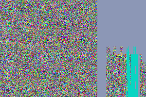
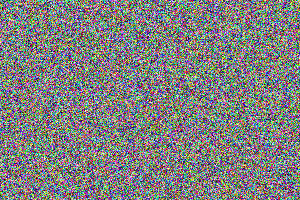
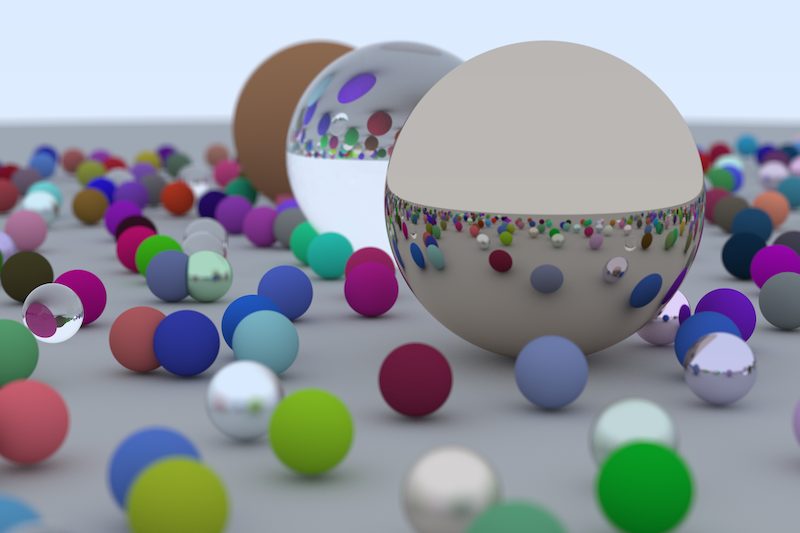
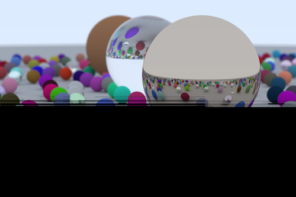

Ray Tracing
Using Metal to accelerate my Ray Tracer
Table of Contents
1. Introduction
So far, I have figured out how metal shaders work, and rewrote my ray tracer without polymorphism. This is important, as according to the Metal Language Specification, the virtual function attribute is not available in Metal, as well as derived classes.
1.1. What I didn't know before starting
There are still a few questions I have though. How am I supposed to pass structs into metal? Can I avoid having to define these structs both in the shader code and main code? Is it possible to have high-quality random numbers generated? How can one start understanding metal shader language, and it's functions?
1.2. Things that arose while working on this project
- Metal does not have a built-in pseudo-RNG like CUDA has.
- Since each thread is completely independent on each other, how can I produce high quality randomness?
- Metal does not support double precision floats. This may impact the produced image.
- Metal does not support the C++ standard library, so I will need to find replacements for some constants, data structures, and such.
2. Starting point
2.1. The Idea
The GPU will run a trace on a single pixel for every thread assigned to the job. Combined, we will get the full image. This does mean that each GPU thread makes multiple samples of each pixel. I am considering instead to allocate more threads so they can handle repeated sampling in parallel.
Basically, we are taking the trace_image function used in the previous ray tracing with no
polymorphism project and moving it to the GPU (along with any helper functions called). This leaves
the main function to set up the scene: a list of objects and a camera.
2.2. Setting up the compute pipeline for the GPU
Before we begin, we must start by setting up the necessary structure for using the GPU.
Taking this from the gpu project that I did, there is very little that needs to be
changed. For the function name, we will call it "trace_image". The path to the library
will be within the same directory as the executable, and will be called shader.metallib.
>> Initialize Compute Pipeline
// Pipeline Setup // create device MTL::Device *device = MTL::CreateSystemDefaultDevice(); NS::Error *error; // create command queue MTL::CommandQueue *command_queue = device->newCommandQueue(); // create command buffer MTL::CommandBuffer *command_buffer = command_queue->commandBuffer(); // create command encoder MTL::ComputeCommandEncoder *command_encoder = command_buffer->computeCommandEncoder(); // ** Create pipeline state object NS::String *libPath = NS::String::string("./shader.metallib", NS::UTF8StringEncoding); auto default_library = device->newLibrary(libPath, &error); if (!default_library) { std::cerr << "Failed to load default library."; std::exit(-1); } auto trace_image_function_name = NS::String::string("trace_image", NS::ASCIIStringEncoding); auto trace_image_function = default_library->newFunction(trace_image_function_name); if (!trace_image_function) { std::cerr << "failed to find the adder function"; } auto pso = device->newComputePipelineState(trace_image_function, &error); // free defualt library and add function trace_image_function_name->release(); default_library->release(); trace_image_function->release(); // pass pipeline state object created // into the command encoder command_encoder->setComputePipelineState(pso);
2.3. Compute Pipeline Function
2.3.1. Input
Looking at the current signature of the trace_image function:
struct tracing_properties { double img_height; double img_width; hittable * world; size_t world_size; double max_depth; camera cam; int samples_per_px; }; void trace_image(struct tracing_properties &prop);
There are a few modifications to these inputs:
- Trace image had a side-effect of modifying a global variable
which stored the final image. Since global variables can't be seen by the GPU,
we will need to pass in the output variable into the function to modify. The output
will be a
Texturetype, which also has dimension properties built-in (removing the need to trackimg_heightandimg_width. - Since each thread will have an independent random number generator from other threads, it would be bad if all of them had the same seed, as this would create a predictable sequence of random numbers for every thread. Since these samples should be random, I will seed each thread's RNG. Thus, we will need to pass in a list of seeds for each thread.
The function also no longer needs to trace every pixel on the image, only the pixel it is assigned to work on.
>> Trace Image
kernel void trace_image(texture2d<float, access::write> tex [[texture(0)]], device float * seeds [[buffer(0)]], device hittable * world [[buffer(1)]], device int * world_size [[buffer(2)]], device camera * cam [[buffer(3)]], device int * max_depth [[buffer(4)]], device int * samples_per_px [[buffer(5)]], uint2 index [[thread_position_in_grid]]) { // seed the rng mt19937 mt; mt.srand(seeds[tex.get_width() * index[1] + index[0]]); float3 pixelColor = float3(0, 0, 0); for (int s = 0; s < samples_per_px[0]; ++s) { float u = (index[0] + mt.rand()) / (tex.get_width() - 1); float v = (tex.get_height() - index[1] + mt.rand()) / (tex.get_height() - 1); pixelColor += ray_color( get_ray_blur(cam, u, v, mt), world, world_size[0], max_depth[0], mt ); } // write to the texture tex.write(float4( metal::sqrt(pixelColor[0] / samples_per_px[0]), metal::sqrt(pixelColor[1] / samples_per_px[0]), metal::sqrt(pixelColor[2] / samples_per_px[0]), 1), index, 0); }
2.4. Finishing compute pipeline setup
We will use a texture to represent the output, encoded as RGBA8Unorm, which has each component represented as a float between 0 and 1, and stored as a 8-bit unsigned integer (0 to 255).
The seeds are stored in a 1D array for convenience but it's basically a squashed 2D array.
After setting up the buffers normally, I set the grid size and threadgroup size, commit the buffer to the GPU, and wait for it to finish.
2.5. Modifications to other files
camera.h, material.h, and hittable.h are shared
between both the metal shaders and C++ side.
Furthermore, metal shader language has specific quirks. For example, you must
specify address space type for references and pointers. So, I had to remove any function
declarations/definitions in these header files and make sure that they worked when
compiling C++ and Metal. Most of these extra functions ended up in my main
shader.metal file.
For these struct definitions, I also needed to make sure that the types can be understood for both sides. Thus, for 3d vectors, we use simd float3 for compatability. This type translates perfectly fine to metal float3 types and is also supported using the simd header in C++. This header seemed to already be in my system's headers so I did not have to try to obtain this.
I also tweaked the way random numbers are generated, so now you need to call the RNG object in order to generate random numbers.
3. Mistakes
These are some insights that may serve me well in the future. After all, I don't want to repeat my mistakes again.
3.1. Indexing
3.1.1. Vertical and Horizontal Components
When you store thread_position_in_grid as a vector (in our case it's length 2), index,
my programmer brain immediately thinks index[0] is the row index, and
index[1] is the column index. In other words,
However, the index actually follows the order, \(x, y\). In other words:
\begin{align*} \text{index} = \left[\begin{matrix} y \\ x \end{matrix}\right] = \left[\begin{matrix} col \\ row \end{matrix}\right] \end{align*}which is the opposite of what I assumed. This is problematic, as I need to retrieve a seed for my random number generator. The consequence is since my width is larger than height, there is some undefined behaviour when it tries to retrieve things out of that range.
This illustrates the issue with my RNG for the issue described above:

What it should normally look like:

And here's what the noise looks like if you set the seed to 0 for all threads:
3.1.2. Scale Direction
Another weird quirk of the index is that for the y-axis, it is not inverted. That means that the bottom right is the index (0, 0). This led to my initial images being upside-down.
3.2. Gamma Correction
There are certain texture pixel formats that actually do consider gamma correction.
RGBA8Unorm does not, meaning I have to do the correction myself.
3.3. Shadow Acne
Since metal does not have double-precision floating point numbers, I suspect the near-misses that cause shadow acne are more frequent due to precision errors. I haven't done anything about this yet.
3.4. Generally Silly
I flipped a sign in my random_in_range function, which made the function output
numbers that were not in the range specified. This caused so many headaches, as
some of the other random functions rely on this function and loop
if the random number does not have a certain quality. Since random_in_range was producing
unreliable random numbers, these other random functions were infinitely looping.
4. Result

Figure 1: Not much visual improvement, but it's fast
It's fast. Very fast. For example, we traced the final scene on a 300 pixel wide image with 10 samples per pixel as a reference for the performance of my tracer. Here are the results:
| Name | Time in seconds (Average, 5 runs) | Relative Performance |
| Reference | 26 | 1 |
| No OOP | 16 | 1.625 |
| Using GPU | 0.40 | 65 |
And this was the main goal that I wanted to accomplish with this project. Now that I have a blazingly fast tracer, we can move on to more difficult and complex scenes.
4.1. Issues
- The output looks like it lost a bit of blueness compared to the reference.
I suspect there may be an issue with my
ray_colorfunction. All I did was convert it to a non-recursive function though. - For large sizes of samples per pixel, the tracer might just quit. Decreasing the threadgroup size might help, but not much is known about why this happens. The largest image I have done was at 400 samples per pixel, for a 3000 pixel wide image.
The samples per pixel on metal seem to affect noise much less than on CPU. This may have to do with how the sampling is done.

Figure 2: It just quits midway, and leaves the rest black.